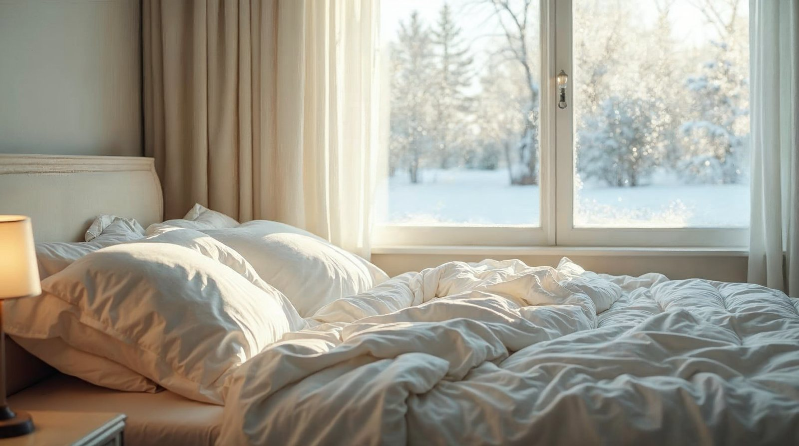
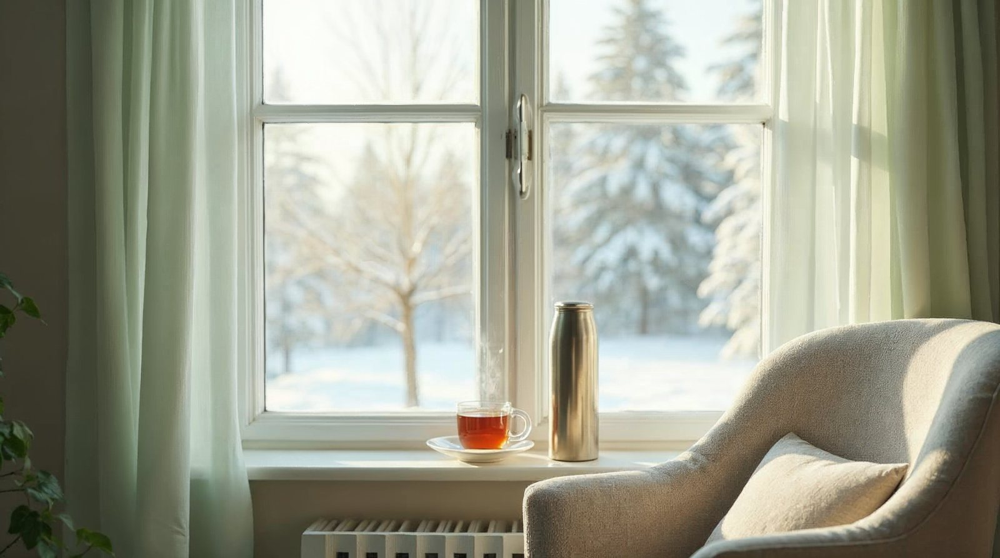
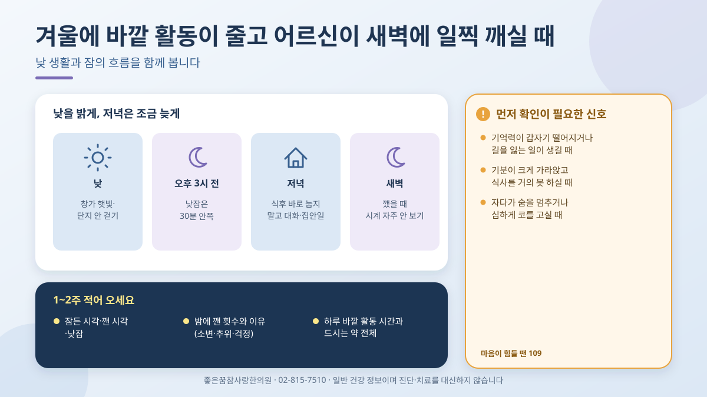

이종호 한의사 감수좋은꿈참사랑한의원 대표원장 (한의사 면허번호 19769)발행 2026-11-24 · 수정 2026-11-26
이 글의 차례
- 왜 이런 불편이 생길 수 있나요
- 왜 겨울에 새벽잠이 더 짧아질까요
- 먼저 이렇게 여쭙니다
- 일상에서 먼저 해 볼 수 있는 것
- 상황별 예시
- 스스로 점검해 보세요
- 비슷한 불편과 어떻게 구분하나요?
- 겨울 하루, 이렇게 짜 보세요
- 한의원에서 함께 살필 수 있는 경우
- 잠자리는 어떻게 살펴보면 좋을까요?
- 가족은 어떻게 도울 수 있나요?
- 진료를 받는 동안에는 어떻게 지내면 좋을까요?
- 낮에 할 수 있는 실내 활동은 무엇이 있나요?
- 첫 진료 전에 무엇을 준비하면 좋을까요?
- 얼마나 지켜보고 언제 상담할까요
- 이렇게 기록해 오시면 상담이 쉬워집니다
- 다시 흐트러지지 않으려면 무엇을 챙길까요?
- 이런 증상은 먼저 확인이 필요합니다
- 관련 글
겨울에 바깥 활동이 줄어든 어르신이 새벽에 일찍 깬다면, 낮에 햇빛을 보는 시간과 낮잠 길이, 저녁에 잠자리에 드는 시각부터 함께 조정해 보는 것이 좋습니다. 날이 추워 산책을 쉬고 텔레비전 앞에서 지내다 보면 저녁 9시면 졸리고 새벽 3~4시에 눈이 떠지는 일이 흔하기 때문입니다.
낮 생활을 바꾸면 잠의 흐름이 며칠 만에 달라지기보다 천천히 따라오는 경우가 많아, 몇 주는 잠 기록을 적으며 지켜보시는 것이 좋습니다.
왜 이런 불편이 생길 수 있나요
- 낮에 햇빛을 덜 보고 움직임이 줄면 밤에 깊게 자기 어려워질 수 있습니다.
- 나이가 들면 잠드는 시각이 앞당겨지는 경향이 있어, 일찍 누우면 새벽에 일찍 깨기 쉽습니다.
- 낮잠이 길거나 늦으면 밤잠이 그만큼 얕아지기 쉽습니다.
- 밤에 소변 때문에 깨는 일, 몸의 냉기, 걱정거리도 잠을 끊기게 합니다.
- 겨울에는 해가 늦게 뜨고 일찍 져서, 집 안 불빛만으로 지내면 낮과 밤의 차이가 덜 느껴집니다.
- 텔레비전 앞에서 깜빡깜빡 조는 시간이 쌓이면 긴 낮잠을 잔 것과 비슷해집니다.
왜 겨울에 새벽잠이 더 짧아질까요
우리 몸은 아침 햇빛을 보면 하루 시계를 맞추고, 그로부터 일정 시간이 지나면 밤에 졸음이 오도록 준비합니다. 낮에 빛을 거의 보지 못하면 이 신호가 흐려져 밤잠도 얕고 짧아지기 쉽습니다.
낮에 몸을 덜 움직이면 밤에 잠을 끌어당기는 피로도 덜 쌓입니다. 일찍 누워도 깊게 자지 못하고, 잠이 일찍 바닥나 새벽에 눈이 떠지는 흐름이 됩니다.
옛 의서에서는 겨울에 일찍 자고 해가 뜬 뒤 일어나라고 했습니다. 다만 너무 이른 시각에 눕는 것은 오히려 새벽 깸으로 이어질 수 있어, 각자의 하루에 맞춰 시각을 정합니다.
먼저 이렇게 여쭙니다
- 요즘 하루에 바깥에 나가시는 시간이 얼마나 되나요?
- 낮잠은 몇 번, 얼마나 주무시나요?
- 저녁 몇 시쯤 잠자리에 드시고, 몇 시에 깨시나요?
- 밤에 소변 때문에 깨시는 일이 있나요?
- 저녁에 드시는 약이 있나요?
- 새벽에 깨신 뒤 다시 잠드시는 데 얼마나 걸리나요?
- 다시 오신 분께는 지난번 이후 낮잠과 바깥 활동이 어땠는지부터 이어서 여쭙니다.

일상에서 먼저 해 볼 수 있는 것
- 햇빛이 드는 낮 시간에 창가에 앉거나 단지 안을 잠깐이라도 걷기
- 낮잠은 오후 3시 전, 30분 안쪽으로 줄이기
- 저녁 식사 뒤 바로 눕기보다 가벼운 집안일이나 대화로 시간 보내기
- 새벽에 깼을 때 시계를 자주 보지 않기
- 저녁에는 따뜻한 물로 발을 씻고 방을 너무 덥지 않게 하기
- 아침에 일어나면 커튼부터 열고, 아침 식사는 밝은 창가에서 하기
- 물과 차는 낮에 충분히 드시고, 잠들기 두세 시간 전부터는 조금씩만 드시기
상황별 예시
- 예를 들어 날이 추워 경로당이나 복지관 나들이를 쉬고 집에만 계신 어르신의 경우, 저녁을 일찍 드시고 8~9시에 잠자리에 들면 새벽 3~4시에 눈이 떠지기 쉽습니다. 잠자리에 드는 시각을 며칠 간격으로 30분씩 늦추고, 해가 드는 오후에 집 앞을 10~20분 걷는 것부터 해 볼 수 있습니다.
- 예를 들어 밤에 소변 때문에 두세 번 깨시는 어르신의 경우, 깬 김에 걱정거리가 떠올라 다시 잠들지 못하는 일이 이어질 수 있습니다. 저녁 늦게 드시는 물과 차의 양, 방과 이불 속 온도, 소변 습관을 함께 살펴봅니다.
- 예를 들어 자녀가 따로 살아 낮에 이야기 나눌 사람이 적은 어르신의 경우, 텔레비전 앞에서 조는 시간이 길어져 밤잠이 더 얕아지기도 합니다. 낮에 전화하거나 만나는 약속을 하루 하나씩 정해 두는 것처럼, 낮 시간에 깨어 있을 계기를 만드는 방법을 함께 이야기해 봅니다.
스스로 점검해 보세요
- 요즘 하루에 바깥에 나가는 시간이 30분이 안 된다
- 저녁 9시 전에 잠자리에 드는 날이 많다
- 낮잠을 오후 늦게, 또는 1시간 넘게 잔다
- 텔레비전 앞에서 깜빡 조는 일이 잦다
- 밤에 소변 때문에 두 번 넘게 깬다
- 새벽에 깬 뒤 30분이 지나도 다시 잠들지 못한다
- 잠과 함께 입맛과 기운이 눈에 띄게 떨어졌다
앞의 네 가지는 낮 생활부터 바꿔 볼 신호이고, 뒤의 세 가지 가운데 하나라도 이어진다면 한 번 상담을 받아 보세요.
비슷한 불편과 어떻게 구분하나요?
새벽에 일찍 깬다는 같은 말 안에도 여러 흐름이 섞여 있어, 함께 오는 모습을 보고 살피는 방향을 정합니다.
- 일찍 졸리고 일찍 깨지만 낮에 크게 힘들지 않다면, 잠의 시간대가 앞당겨진 흐름일 수 있어 잠자리에 드는 시각부터 조정해 봅니다.
- 깬 뒤 걱정이 떠올라 잠들지 못하고 낮에도 기분이 가라앉는다면, 마음의 긴장과 기분을 함께 살핍니다.
- 소변 때문에 여러 번 깬다면 저녁 수분과 몸의 냉기, 소변 습관을 함께 봅니다.
- 가족이 보기에 코골이가 심하거나 숨을 멈추는 모습이 있다면, 잠자는 동안의 호흡 문제를 먼저 생각합니다.
어느 쪽인지 스스로 나누기 어렵다면 잠 기록과 함께 가족이 본 모습을 들려주셔도 충분합니다.
겨울 하루, 이렇게 짜 보세요
추운 날에도 지킬 수 있도록 하루를 몇 토막으로 나눠 두면 잠의 흐름을 잡는 데 도움이 됩니다. 아침 커튼과 창가 아침, 해 드는 오전의 짧은 걷기, 오후 3시 전 짧은 낮잠, 오후에 깨어 있을 일 하나, 저녁 뒤 가벼운 집안일 순서입니다.
너무 추운 날은 걷기 대신 창가 의자에 앉아 햇빛을 쬐셔도 됩니다. 저는 어르신들께 큰 목표를 잘 드리지 않습니다. 이 가운데 해내실 수 있는 하나부터 정하고, 못 지킨 날이 있어도 스스로를 탓하지 말고 다음 날 다시 하시면 됩니다.
한의원에서 함께 살필 수 있는 경우
- 새벽에 일찍 깨고 다시 잠들기 어려운 경우 낮 생활과 잠의 흐름을 함께 살핍니다.
- 밤에 소변 때문에 자주 깨는 경우 몸의 냉기와 소변 습관을 함께 살핍니다.
- 입맛과 기력이 함께 떨어진 경우 식사와 몸의 리듬도 이어서 여쭙니다.
좋은꿈참사랑한의원에서는 첫 방문 때 모든 분께 맥부터 짚으면서 잠자리에 드는 시각과 깨는 시각, 낮잠과 낮의 생활, 드시는 약 전체를 자세히 여쭙고, 혀와 배를 살펴 몸 상태를 봅니다. 밤에 소변으로 깨시거나 손발이 차다면 그 흐름도 함께 확인합니다.
그 뒤 필요하다고 판단될 때 침이나 한약 상담 등을 정하며 드시는 약을 함께 고려하고, 낮에 해 볼 일과를 정리합니다. 다음에 오시면 지난번 정한 낮 일과와 잠 기록을 이어서 보며 방향을 다시 맞춥니다.
보호자가 함께 오시면 평소 모습도 여쭙고, 토·일·공휴일에도 09:30~15:00 진료하니 가족이 함께 오기 쉬운 날로 정하셔도 됩니다.
잠자리는 어떻게 살펴보면 좋을까요?
방이 너무 덥거나 건조하면 새벽에 깨기 쉽습니다. 이불 속은 따뜻하게 하되 방은 너무 덥지도 춥지도 않게 맞추고, 가습기나 젖은 수건으로 습도를 맞춰 주세요.
새벽에 화장실을 다녀오실 때 넘어지지 않도록 침대에서 화장실까지 작은 수면등을 켜 두세요. 밝은 형광등을 켜면 잠이 달아나기 쉽습니다.
잠자리에서 텔레비전이나 라디오를 오래 켜 두기보다, 졸릴 때 눕고 깨어 있을 때는 거실에서 지내는 식으로 잠자리와 깨어 있는 자리를 나눠 보세요.
가족은 어떻게 도울 수 있나요?
떨어져 사는 가족이라면 낮 시간에 전화를 드리는 것만으로도 어르신이 깨어 계실 계기가 됩니다. 저녁 늦은 통화보다 오전이나 이른 오후 통화가 잠에는 더 도움이 될 수 있습니다.
함께 사는 가족이라면 날이 좋은 날 짧은 산책을 같이 나가거나, 오후에 장보기를 함께 하는 것도 좋습니다.
진료를 받는 동안에는 어떻게 지내면 좋을까요?
잠 기록을 이어서 적어 오시면 무엇이 달라졌는지 함께 보기 쉽습니다. 드시는 약은 그대로 유지하시고, 새로 생긴 약이 있으면 알려 주세요.
낮에 할 수 있는 실내 활동은 무엇이 있나요?
바깥이 춥고 미끄러운 날에는 집 안에서 몸을 쓰는 시간을 따로 정해 두세요. 텔레비전 광고가 나올 때마다 일어나 집 안을 한 바퀴 걷는 것만으로도 앉아 있는 시간이 줄어듭니다.
의자 등받이를 잡고 발뒤꿈치를 들었다 내리기, 의자에서 천천히 일어났다 앉기처럼 넘어질 걱정이 적은 동작부터 시작해 보세요. 무릎이나 허리가 불편하다면 진료 때 맞는 동작을 함께 고릅니다.
화분 돌보기, 간단한 요리, 사진 정리처럼 손과 머리를 쓰는 일도 낮에 깨어 있는 데 도움이 됩니다.
첫 진료 전에 무엇을 준비하면 좋을까요?
드시는 약은 약 봉투나 처방전을 그대로 가져오시면 가장 정확합니다. 영양제나 건강식품도 함께 알려 주세요.
진료 때 배와 손발의 온기를 살피기 때문에 편한 옷차림이 좋고, 추운 날에는 따뜻하게 입고 오세요.
잠 걱정이 크실수록 기록을 너무 꼼꼼히 하려다 오히려 잠에 신경이 더 쓰일 수 있습니다. 밤중에 시계를 보며 적기보다 아침에 한 번 떠올려 적으시면 됩니다.

얼마나 지켜보고 언제 상담할까요
- 낮잠과 잠자리에 드는 시각을 바꾼 뒤 2~3주는 잠 기록을 적으며 지켜보세요.
- 3주가 지나도 새벽에 깬 뒤 다시 잠들지 못하는 날이 일주일에 사흘 넘게 이어지면 상담을 권합니다.
- 낮에 졸려 식사나 바깥일을 거르게 되거나, 잠 걱정 때문에 하루 종일 기분이 가라앉는다면 몇 주 기다리기보다 일찍 살펴보세요.
- 가족이 보기에 코골이가 심하거나 자다가 숨을 멈추는 모습이 있다면 수면 검사를 먼저 받아 보시길 권합니다.
이렇게 기록해 오시면 상담이 쉬워집니다
- 1~2주 동안 잠든 시각, 깬 시각, 낮잠
- 밤에 깨는 횟수와 그 이유(소변, 추위, 걱정 등)
- 하루 바깥 활동 시간
- 드시는 약 전체
- 보호자가 본 낮 동안의 모습(조는 시간, 대화, 식사량)
기록은 한 줄이면 충분합니다. 예를 들어 '3일, 밤 9시 반 누움, 새벽 4시 깸, 소변 1번, 낮잠 40분, 바깥 15분'처럼 적으면 됩니다. 보호자가 대신 적어 주셔도 됩니다.
다시 흐트러지지 않으려면 무엇을 챙길까요?
잠이 조금 나아지면 다시 일찍 눕거나 낮잠이 길어지기 쉬운데, 그러면 새벽 깸이 되돌아오는 일이 많습니다. 정한 하루 흐름은 봄이 올 때까지 이어 가 보세요.
드시는 약이 바뀌었거나 새로 생겼다면 잠이 달라진 시기와 겹치는지 함께 적어 두세요.
겨울 몇 달은 하루가 유난히 길게 느껴지는 때입니다. 새벽에 홀로 깨어 뒤척이신 시간이 얼마나 막막하셨을까 싶습니다. 다음에 오시면 새벽 몇 시에 깨셨는지, 낮에 해를 얼마나 보셨는지부터 여쭙겠습니다.
이런 증상은 먼저 확인이 필요합니다
- 잠과 함께 기억력이 갑자기 떨어지거나 길을 잃는 일이 생긴 경우
- 기분이 크게 가라앉아 식사를 거의 못 하시거나, 스스로를 해칠 생각이 드는 경우(☎ 109로 바로 연락)
이런 신호가 있으면 한의원보다 가까운 병원이나 응급실을 먼저 찾으세요.
관련 글
- 새벽에 자꾸 잠이 깨는 이유는 무엇이고, 어떤 점을 살펴보나요?
- 자다가 소변 때문에 깨면 잠과 어떤 관련이 있고, 무엇을 살펴보나요?
- 난방비가 걱정돼 집을 서늘하게 지내는 어르신은 겨울에 몸을 어떻게 챙기나요?

여쭙는 것
- 요즘 하루에 바깥에 나가시는 시간이 얼마나 되나요?
- 낮잠은 몇 번, 얼마나 주무시나요?
- 저녁 몇 시쯤 잠자리에 드시고, 몇 시에 깨시나요?
생활에서 해 볼 것
- 햇빛이 드는 낮 시간에 창가에 앉거나 단지 안을 잠깐이라도 걷기
- 낮잠은 오후 3시 전, 30분 안쪽으로 줄이기
- 저녁 식사 뒤 바로 눕기보다 가벼운 집안일이나 대화로 시간 보내기
한의원에서 함께 살필 것
- 새벽에 일찍 깨고 다시 잠들기 어려운 경우 낮 생활과 잠의 흐름을 함께 살핍니다.
- 밤에 소변 때문에 자주 깨는 경우 몸의 냉기와 소변 습관을 함께 살핍니다.
- 입맛과 기력이 함께 떨어진 경우 식사와 몸의 리듬도 이어서 여쭙니다.
먼저 확인이 필요한 신호
- 잠과 함께 기억력이 갑자기 떨어지거나 길을 잃는 일이 생긴 경우
- 기분이 크게 가라앉아 식사를 거의 못 하시거나, 스스로를 해칠 생각이 드는 경우(1…
한눈에 보는 표
| 구분 | 핵심 |
|---|---|
| 여쭙는 것 | 요즘 하루에 바깥에 나가시는 시간이 얼마나 되나요? 낮잠은 몇 번, 얼마나 주무시나요? |
| 생활에서 해 볼 것 | 햇빛이 드는 낮 시간에 창가에 앉거나 단지 안을 잠깐이라도 걷기 낮잠은 오후 3시 전, 30분 안쪽으로 줄이기 |
| 한의원에서 함께 살필 것 | 새벽에 일찍 깨고 다시 잠들기 어려운 경우 낮 생활과 잠의 흐름을 함께 살핍니다. 밤에 소변 때문에 자주 깨는 경우 몸의 냉기와 소변 습관을 함께 살핍니다. |
| 먼저 확인이 필요한 신호 | 잠과 함께 기억력이 갑자기 떨어지거나 길을 잃는 일이 생긴 경우 기분이 크게 가라앉아 식사를 거의 못 하시거나, 스스로를 해칠 생각이 드는 경우(109로 바로 연락) |
자주 묻는 질문
나이가 들면 잠이 줄어드는 게 당연한가요?
나이에 따라 잠의 모양이 달라지기는 합니다. 그래도 낮에 졸리고 힘드시다면 함께 살펴볼 만합니다.
수면제를 드시고 계신데 함께 진료받아도 되나요?
네, 드시는 약을 알려 주시면 그대로 유지하면서 생활 리듬을 함께 살핍니다. 수면제를 줄이거나 끊는 일은 처방한 의사와 상의해 주세요.
새벽에 깨면 그냥 누워 있어야 하나요?
오래 잠이 오지 않으면 조용히 일어나 어두운 불빛 아래 잠깐 앉아 있다가 졸릴 때 다시 눕는 편을 권합니다.
한약을 먹으면 잠이 바로 늘어나나요?
잠이 바로 늘어난다고 약속드리기는 어렵습니다. 한약은 잠만 보고 정하기보다 소화, 몸의 냉기, 드시는 약까지 함께 살핀 뒤 필요하다고 판단될 때 상담합니다. 낮 생활을 바꾸는 일과 함께 가는 경우가 많아 몇 주에 걸쳐 잠 기록을 보며 판단합니다.
좋은꿈참사랑한의원은 재진 때 지난번 이야기부터 이어서 여쭙니다. 진료시간과 예약은 오시는 길에서 확인하세요.
어디서 상담받을 수 있나요?
좋은꿈참사랑한의원은 서울 동작구 만양로2길 2 신성빌딩 3층·5층(서울 동작구 상도동, 7호선 상도역 3번 출구 근처)에 있습니다. 한의사 3명(이종호 대표원장, 조영기 수석진료원장, 정원영 진료원장)이 진료합니다. 진료시간은 평일 09:30~20:00(점심 13:00~14:00), 토·일·공휴일 09:30~15:00이며, 방문 전 전화로 확인을 권합니다. 예약은 네이버 예약, 카카오톡 상담, 전화 02-815-7510로 받습니다.
이 글은 일반적인 건강 정보이며 개인의 진단이나 치료를 대신하지 않습니다. 증상이 있거나 복용 중인 약이 있다면 진료를 통해 확인하세요. 치료 효과는 개인마다 다를 수 있습니다.
작성 기준: 일반적으로 알려져 있는 건강 정보를 참고해 정리했습니다(대표원장 감수). 증상 기록은 1~2주 동안 하루 1회, 비슷한 시간에 적어 오시면 지난 상태와 비교하기 쉽습니다.